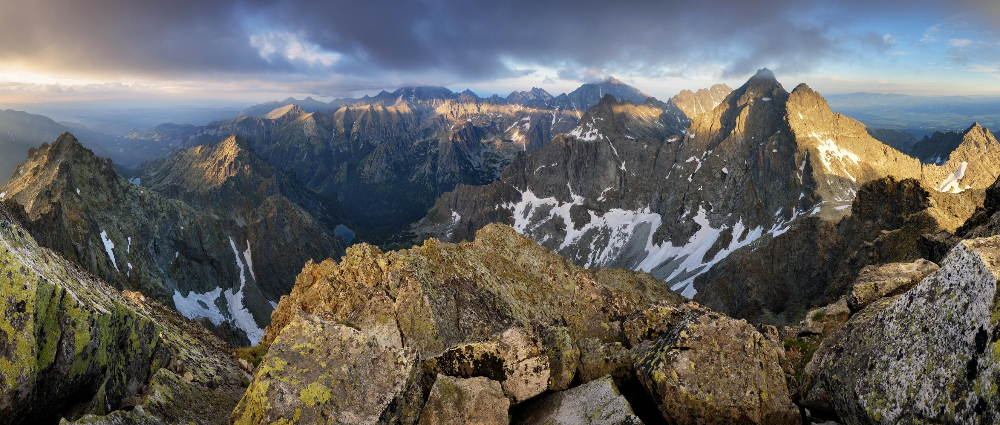
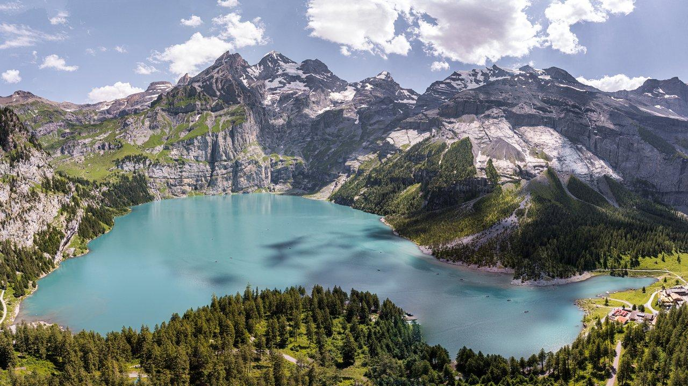

Absolvované výlety
Vzpomínky na cesty za krásami hor.

Výlet do Tater
Horská túra s nádhernými výhledy na okolní štíty a horská údolí.
Obtížnost: Střední
Fotografie
Výstup na Lysou horu
Výšlap na nejvyšší vrchol Moravskoslezských Beskyd s krásným výhledem do krajiny.
Obtížnost: Střední
Fotografie
Horská jezera Alp
Putování kolem horského jezera obklopeného vysokými alpskými vrcholy.
Obtížnost: Lehká
Fotografie
Výlet pod Grossglockner
Poznávání vysokohorské krajiny v okolí nejvyšší hory Rakouska.
Obtížnost: Náročná
Fotografie